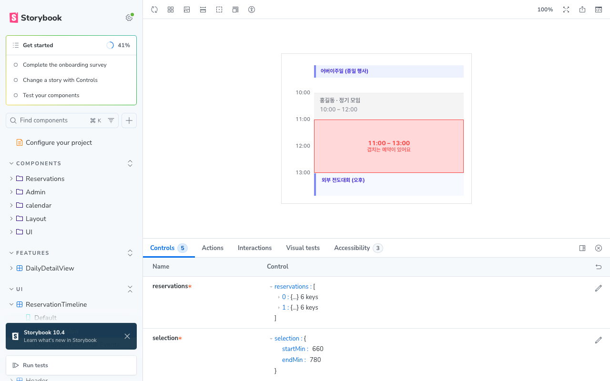
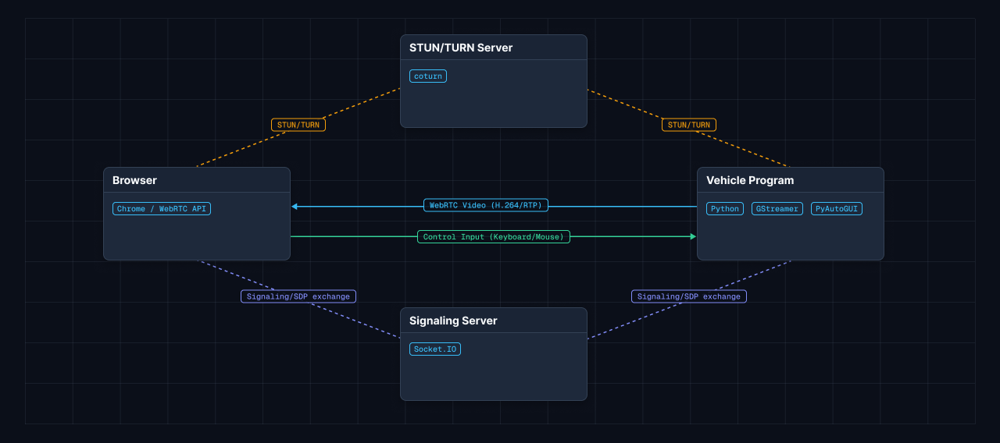

클라우드개발팀 매니저
2022.09 ~ 2026.06 (3년 9개월)각 프로젝트를 클릭하면 상세한 문제 해결 과정을 보실 수 있습니다.
오프라인/카카오톡 기반 공간 예약을 웹 서비스로 전환하여, 실시간 장소 예약 및 구글 캘린더 동기화를 자동화한 모바일 중심 웹 애플리케이션.
예약 중첩, 외부 행사, 로딩 및 에러 등 캘린더 화면이 가지는 다양한 예외 상태를 백엔드 API 데이터 없이 재현하고 검증하기 어려운 문제를 해결하고자, Storybook을 활용해 백엔드 API 의존 없이 타임라인·캘린더 컴포넌트의 다양한 상태를 독립적으로 격리 개발하고 검증했습니다.
useInfiniteQuery와 Intersection Observer를 결합해 대용량 목록 무한 스크롤 페이징을 구현하고, staleTime 캐싱 옵션을 적용해 네트워크 재요청을 최소화했습니다.
Vitest로 캘린더 내부 예약과 외부 구글 캘린더 일정의 정렬·시간 계산 함수 유닛 테스트를 작성하고, Playwright E2E 환경에서 외부 API 의존 없는 목킹 모드를 구축하여 전체 유저 흐름 자동화 테스트를 수행했습니다.

자율주행 개발 환경 설정, 모듈 실행, 로그 관리를 웹 UI로 통합한 웹 기반 개발 플랫폼.
서버-UI 강결합으로 인한 확장성 한계 및 페이지 전환 시마다 전체 새로고침 발생 문제를 해결하기 위해, 전환 PoC로 생산성을 입증한 후 라우트 단위 점진적 마이그레이션을 수행하여 독립적인 SPA 프론트엔드 아키텍처를 완성했습니다.
Webpack bundle-analyzer 분석 후 React.lazy/Suspense 라우트 단위 코드 스플리팅을 적용하고, WOFF2 폰트 및 WebP 이미지 리소스 변환을 진행했습니다.
전사 Git Flow 운영 규약을 정비하여 가이드를 작성하고, GitHub Actions 기반 자동 빌드·테스트·배포 파이프라인을 구축했습니다.
8GB 대용량 전송 시 메모리 초과(OOM) 방지를 위해 다운로드 전용 서버 분리 및 대역폭 제한을 설정하고, Django StreamingHttpResponse를 구축하여 스트리밍 환경을 구현했습니다.
주기적 HTTP Polling으로 인한 서버 요청 낭비를 해결하기 위해 Socket.io 양방향 웹소켓 통신 구조로 전면 개편하고 Skeleton UI를 도입했습니다.
이동형 충전 트레일러의 위치·배터리·주행 상태를 실시간 모니터링하는 관제 시스템.
백엔드 팀에 상태 및 액션 인덱스 플래그 인터페이스를 제안하여 규격을 정립하고, FE는 ACTION_UI_MAP 기반 UI 렌더링 및 인덱스 전달만 수행하도록 역할을 완전히 분리했습니다.
백엔드 API 개발 지연 상황에서 MSW로 네트워크 레벨 모킹 환경을 구축하여 API 미완성 상태에서도 엣지 케이스 및 예외 시나리오까지 사전 검증했습니다.
Socket.io 수신 데이터를 렌더링 큐에 수집해 requestAnimationFrame 단위로 마커를 일괄 업데이트하고, 위치 좌표 보간 연산을 적용하여 마커가 순간이동하는 현상을 해소했습니다.

소형 자율주행 차량용 WebRTC 기반 실시간 화면 스트리밍 및 원격 제어 인터페이스 솔루션.
WebRTC Data Channel을 도입해 P2P 제어 전송 경로로 개편하고, Signaling 서버 구현 및 STUN/TURN 서버 환경 구축 후 18개 시나리오 실측 검증을 수행했습니다.
송신단에서 10:1 이벤트 샘플링 필터를 구현해 전송 빈도를 초당 입력의 1/10 수준으로 감소시켜 차량 단말의 연산 부하를 해소했습니다.
GStreamer 프레임 송출 이벤트 및 FE 핑 타임아웃 이중 감지 로직을 구현하고, 단절 시 자동 Signaling 재협상 로직을 구축했습니다.

백엔드 개발자들과 협업하여 온라인 배달 서비스 프로젝트를 진행하며 프론트엔드 개발을 담당했습니다.
전공 교육 과정을 이수하고 졸업하였습니다.